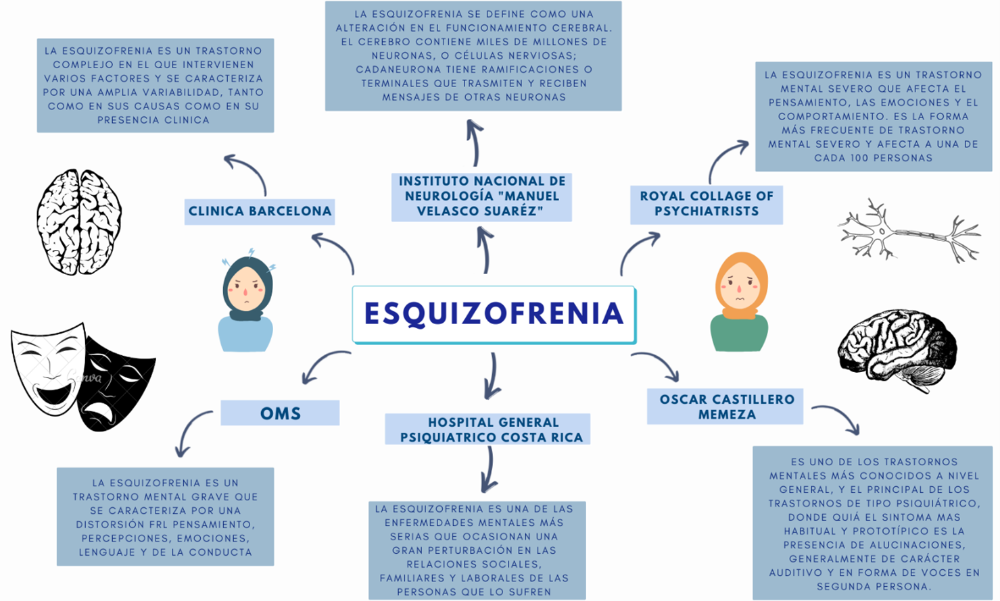

Trastornos Psicológicos
El Concepto de trastornos mentales y la Esquizofrenia como trastorno psicológico.
Las enfermedades o trastornos mentales son afecciones que impactan su pensamiento, sentimientos, estado de ánimo y comportamiento. Pueden ser ocasionales o duraderas (crónicas). Pueden afectar su capacidad de relacionarse con los demás y funcionar cada día. Podríamos definir un trastorno psicológico, también conocido como trastorno mental, como un patrón de síntomas psicológicos o de comportamiento que afectan a varias áreas de la vida y/o crean alguna clase de malestar emocional en la persona que lo padece. Advertimos que no somos una institución de medicina ni centro de educación, salud o investigación, nosotros nos dedicamos a recabar información clasificada y certificada por expertos sobre el trastorno de esquizofrenia para poder facilitar su divulgación ya que este tema cuenta con diversos prejuicios, por ello buscamos una divulgacion facil y efectiva a traves de esta pagina web.
Pese a las diversas revisiones que ha sufrido a lo largo de los años, el Manual Diagnóstico y Estadístico de los Trastornos Mentales (DSM) ha mantenido una definición de trastorno mental muy similar en cada una de sus versiones. La última revisión (DSM V – mayo de 2013) establece la siguiente definición: “Un trastorno mental es un síndrome caracterizado por una alteración clínicamente significativa del estado cognitivo, la regulación emocional o el comportamiento de un individuo, que refleja una disfunción de los procesos psicológicos, biológicos o del desarrollo que subyacen en su función mental”.
Habitualmente los trastornos mentales van asociados a un estrés significativo o una discapacidad, ya sea social, laboral o de otras actividades importantes, y como en el resto de las definiciones que han venido manejándose a lo largo de los años, se excluyen en todo caso las respuestas culturalmente predecibles, o las consideradas socialmente anómalas en un determinado contexto.
Un denominador común es que existen varias dimensiones de bienestar, la salud mental es una condición de bienestar psicológico en la cual un individuo puede realizarse, manejar el estrés normal, trabajar productivamente y aportar a la sociedad en la cual vive. La salud mental es más que la ausencia de trastornos mentales, e incluye tanto las vivencias del individuo como las relaciones entre el individuo y su entorno social.
La enfermedad mental todavía puede ser un tema altamente estigmatizado en la iglesia. Para aquellos que no tienen tales luchas, puede ser difícil entender las ideas suicidas y la desesperación extrema que conlleva la depresión clínica. Aunque muchos religiosos están familiarizados con la prueba de ansiedad ocasional o con sentimientos depresivos, las personas con una enfermedad mental diagnosticada enfrentan desafíos únicos.
Charles Spurgeon dijo una vez: “La mente puede descender mucho más abajo que el cuerpo, porque en él hay pozos sin fondo. La carne solo puede soportar un cierto número de heridas y no más, pero el alma puede sangrar de diez mil maneras y morir una y otra vez cada hora”. La enfermedad mental no es un fenómeno nuevo. Y las mismas verdades bíblicas que han alentado a los cristianos durante siglos pueden alentar a aquellos que sufren enfermedades mentales hoy.
En el Manual Diagnóstico y Estadístico de la Asociación de Psiquiatría Americana (APA), la esquizofrenia se clasifica como un trastorno psicótico, y el modelo que los clínicos describen con mayor frecuencia es el de un trastorno psicótico que se debe principalmente a una función anormal de la dopamina. Este modelo ha dominado las ideas acerca del trastorno durante décadas. En pocas palabras, la simple ecuación de esquizofrenia = anomalía de la dopamina = psicosis es en cierto modo una aberración histórica, y se debe a que los antagonistas de la dopamina fueron el primer tratamiento del que se dispuso de clara evidencia de eficacia y durante muchos años han sido (aparte de la posible contribución de la serotonina a su eficacia) la única clase de fármacos con tal evidencia disponible.
La psicosis forma parte de la esquizofrenia, pero lo mismo ocurre con otros síndromes neuropsiquiátricos, como la depresión, el abuso de sustancias y los trastornos de ansiedad. El deterioro cognitivo (dificultades de memoria, atención, función ejecutiva, etc.) es generalizado y afecta a muchos dominios cognitivos, puede preceder al inicio de la psicosis y es un potente factor predictivo de la función. Los deterioros cognitivos se identifican también en los familiares de los casos iniciales de esquizofrenia diagnosticados; algunas anomalías se han utilizado como Endo fenotipos para explorar la genética de la esquizofrenia. En los pacientes con esquizofrenia y sus familias, hay un aumento de signos neurológicos que no se puede atribuir al tratamiento antipsicótico.
Otro punto débil del concepto habitual de la esquizofrenia es que se interpreta como una enfermedad exclusivamente cerebral. Sin embargo, desde hace muchos años disponemos de evidencias de que, como grupo, las personas con esquizofrenia presentan diversas variantes anatómicas sutiles que sólo pueden explicarse como la formación anormal de los órganos durante la gestación. Estas variantes no se limitan a la cabeza y el cuello, sino que incluyen anomalías de los dedos de los pies, el plexo venoso de las uñas, las huellas dactilares y otras.
Un concepto más exacto de la esquizofrenia puede resumirse como lo siguiente:
Sus manifestaciones básicas consisten en una mezcla de signos y síntomas característicos. Los síntomas afectan a múltiples procesos psicológicos, como la percepción (alucinaciones), ideación, comprobación de la realidad (delirios), procesos de pensamiento (asociaciones laxas), sentimientos (afecto plano, afecto inapropiado), atención, concentración, motivación y juicio. No hay ningún síntoma que sea por sí solo patognomónico de la esquizofrenia. Estas características psicológicas y conductuales se asocian a diversos tipos de deterioro.
La esquizofrenia infantil es un trastorno mental poco común, pero grave en la que los niños y adolescentes interpretan la realidad de manera anormal. La esquizofrenia implica una variedad de problemas con respecto al pensamiento (cognitivo), al comportamiento o a las emociones. Puede provocar una combinación de alucinaciones, ideas delirantes y trastornos graves en el pensamiento y el comportamiento que afecta la capacidad de vivir normalmente; comienza a una edad más temprana generalmente, en la adolescencia y tiene una repercusión en el comportamiento y desarrollo del niño. En la esquizofrenia infantil, la edad temprana de la aparición de la enfermedad implica desafíos especiales con respecto al diagnóstico, el tratamiento, la educación y el desarrollo emocional y social.
La esquizofrenia es una enfermedad crónica que requiere tratamiento de por vida. Identificar e iniciar el tratamiento para la esquizofrenia infantil lo más pronto posible puede mejorar mucho los resultados a largo plazo.
Es importante recordar que la esquizofrenia es algo más que la psicosis y que las personas con esquizofrenia presentan una gran carga de problemas médicos y un aumento de la mortalidad. Debemos enseñar a los estudiantes, los pacientes y las familias de éstos el concepto más exacto de la esquizofrenia. La teoría de la dopamina es un modelo útil para la terapéutica con los antipsicóticos actuales, pero no es un modelo útil del trastorno esquizofrénico.